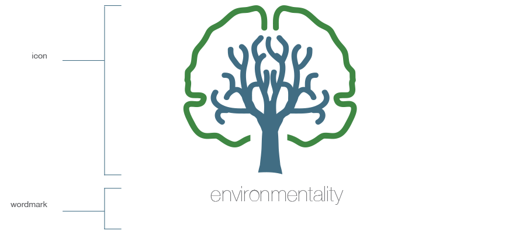
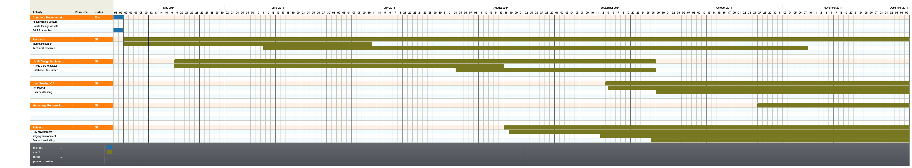

environmentality
a web app for Cleaning the Chesapeake, One piece of trash at a time
But there is still an even greater threat.
How I've decided to take action
environmentality
Video Backup
About sectionkeep it
simple
My Process
Settling on an Idea
Creating an Identity
The Logo and Icon
A Schedule
Designing the interface
Wireframes
Mockups
Designing and developing the application
The right tools for the job


the applications foundations
10 different technologies!
Thank you!
Github: che-effe
twitter: @cgrugan